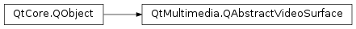

QAbstractVideoSurface¶
Synopsis¶
Functions¶
- def
error() - def
isActive() - def
nativeResolution() - def
setError(error) - def
setNativeResolution(resolution) - def
surfaceFormat()
Virtual functions¶
- def
isFormatSupported(format) - def
nearestFormat(format) - def
present(frame) - def
start(format) - def
stop() - def
supportedPixelFormats([type=QAbstractVideoBuffer.NoHandle])
Signals¶
- def
activeChanged(active) - def
nativeResolutionChanged(resolution) - def
supportedFormatsChanged() - def
surfaceFormatChanged(format)
Detailed Description¶
The
PySide2.QtMultimedia.QAbstractVideoSurfaceclass is a base class for video presentation surfaces.The
PySide2.QtMultimedia.QAbstractVideoSurfaceclass defines the standard interface that video producers use to inter-operate with video presentation surfaces. You can subclass this interface to receive video frames from sources likedecoded mediaorcamerasto perform your own processing.A video surface presents a continuous stream of identically formatted
PySide2.QtMultimedia.QVideoFrameinstances, where the format of each frame is compatible with a stream format supplied when starting a presentation. Each frame may have timestamp information that can be used by the surface to decide when to display that frame.A list of pixel formats a surface can present is given by the
PySide2.QtMultimedia.QAbstractVideoSurface.supportedPixelFormats()function, and thePySide2.QtMultimedia.QAbstractVideoSurface.isFormatSupported()function will test if a video surface format is supported. If a format is not supported thePySide2.QtMultimedia.QAbstractVideoSurface.nearestFormat()function may be able to suggest a similar format. For example, if a surface supports fixed set of resolutions it may suggest the smallest supported resolution that contains the proposed resolution.The
PySide2.QtMultimedia.QAbstractVideoSurface.start()function takes a supported format and enables a video surface. Once started a surface will begin displaying the frames it receives in thePySide2.QtMultimedia.QAbstractVideoSurface.present()function. Surfaces may hold a reference to the buffer of a presented video frame until a new frame is presented or streaming is stopped. In addition, a video surface may hold a reference to a video frame until theend timestamphas passed. ThePySide2.QtMultimedia.QAbstractVideoSurface.stop()function will disable a surface and release any video buffers it holds references to.
Implementing a subclass of QAbstractVideoSurface¶
When implementing a subclass of this interface, there are only a handful of functions to implement, broken down into two classes:
- Format related
- Presentation related
For format related functionality, you just have to describe the pixel formats that you support (and the
PySide2.QtMultimedia.QAbstractVideoSurface.nearestFormat()function). For presentation related functionality, you have to implement thePySide2.QtMultimedia.QAbstractVideoSurface.present()function, and thePySide2.QtMultimedia.QAbstractVideoSurface.start()andPySide2.QtMultimedia.QAbstractVideoSurface.stop()functions.Note
You must call the base class implementation of
PySide2.QtMultimedia.QAbstractVideoSurface.start()andPySide2.QtMultimedia.QAbstractVideoSurface.stop()in your implementation.
-
class
PySide2.QtMultimedia.QAbstractVideoSurface([parent=nullptr])¶ Parameters: parent – PySide2.QtCore.QObjectConstructs a video surface with the given
parent.
-
PySide2.QtMultimedia.QAbstractVideoSurface.Error¶ This enum describes the errors that may be returned by the
PySide2.QtMultimedia.QAbstractVideoSurface.error()function.Constant Description QAbstractVideoSurface.NoError No error occurred. QAbstractVideoSurface.UnsupportedFormatError A video format was not supported. QAbstractVideoSurface.IncorrectFormatError A video frame was not compatible with the format of the surface. QAbstractVideoSurface.StoppedError The surface has not been started. QAbstractVideoSurface.ResourceError The surface could not allocate some resource.
-
PySide2.QtMultimedia.QAbstractVideoSurface.activeChanged(active)¶ Parameters: active – PySide2.QtCore.bool
-
PySide2.QtMultimedia.QAbstractVideoSurface.error()¶ Return type: PySide2.QtMultimedia.QAbstractVideoSurface.ErrorReturns the last error that occurred.
If a surface fails to
PySide2.QtMultimedia.QAbstractVideoSurface.start(), or stops unexpectedly this function can be called to discover what error occurred.
-
PySide2.QtMultimedia.QAbstractVideoSurface.isActive()¶ Return type: PySide2.QtCore.boolIndicates whether a video surface has been started.
Returns true if the surface has been started, and false otherwise.
-
PySide2.QtMultimedia.QAbstractVideoSurface.isFormatSupported(format)¶ Parameters: format – PySide2.QtMultimedia.QVideoSurfaceFormatReturn type: PySide2.QtCore.boolTests a video surface
formatto determine if a surface can accept it.Returns true if the format is supported by the surface, and false otherwise.
-
PySide2.QtMultimedia.QAbstractVideoSurface.nativeResolution()¶ Return type: PySide2.QtCore.QSize
-
PySide2.QtMultimedia.QAbstractVideoSurface.nativeResolutionChanged(resolution)¶ Parameters: resolution – PySide2.QtCore.QSize
-
PySide2.QtMultimedia.QAbstractVideoSurface.nearestFormat(format)¶ Parameters: format – PySide2.QtMultimedia.QVideoSurfaceFormatReturn type: PySide2.QtMultimedia.QVideoSurfaceFormatReturns a supported video surface format that is similar to
format.A similar surface format is one that has the same
pixel formatandhandle typebut may differ in some of the other properties. For example, if there are restrictions on theframe sizesa video surface can accept it may suggest a format with a larger frame size and aPySide2.QtMultimedia.QVideoSurfaceFormat.viewport()the size of the original frame size.If the format is already supported it will be returned unchanged, or if there is no similar supported format an invalid format will be returned.
-
PySide2.QtMultimedia.QAbstractVideoSurface.present(frame)¶ Parameters: frame – PySide2.QtMultimedia.QVideoFrameReturn type: PySide2.QtCore.boolPresents a video
frame.Returns true if the frame was presented, and false if an error occurred.
Not all surfaces will block until the presentation of a frame has completed. Calling on a non-blocking surface may fail if called before the presentation of a previous frame has completed. In such cases the surface may not return to a ready state until it has had an opportunity to process events.
If fails for any other reason the surface should immediately enter the stopped state and an
PySide2.QtMultimedia.QAbstractVideoSurface.error()value will be set.A video surface must be in the started state for to succeed, and the format of the video frame must be compatible with the current video surface format.
-
PySide2.QtMultimedia.QAbstractVideoSurface.setError(error)¶ Parameters: error – PySide2.QtMultimedia.QAbstractVideoSurface.ErrorSets the value of
PySide2.QtMultimedia.QAbstractVideoSurface.error()toerror.This can be called by implementors of this interface to communicate what the most recent error was.
-
PySide2.QtMultimedia.QAbstractVideoSurface.setNativeResolution(resolution)¶ Parameters: resolution – PySide2.QtCore.QSizeSet the video surface native
resolution.This function can be called by implementors of this interface to specify to frame producers what the native resolution of this surface is.
-
PySide2.QtMultimedia.QAbstractVideoSurface.start(format)¶ Parameters: format – PySide2.QtMultimedia.QVideoSurfaceFormatReturn type: PySide2.QtCore.boolStarts a video surface presenting
formatframes.Returns true if the surface was started, and false if an error occurred.
Note
You must call the base class implementation of at the end of your implementation.
-
PySide2.QtMultimedia.QAbstractVideoSurface.stop()¶ Stops a video surface presenting frames and releases any resources acquired in
PySide2.QtMultimedia.QAbstractVideoSurface.start().Note
You must call the base class implementation of at the start of your implementation.
-
PySide2.QtMultimedia.QAbstractVideoSurface.supportedFormatsChanged()¶
-
PySide2.QtMultimedia.QAbstractVideoSurface.supportedPixelFormats([type=QAbstractVideoBuffer.NoHandle])¶ Parameters: type – PySide2.QtMultimedia.QAbstractVideoBuffer.HandleTypeReturn type: Returns a list of pixel formats a video surface can present for a given handle
type.The pixel formats returned for the
QAbstractVideoBuffer.NoHandletype are valid for any buffer that can be mapped in read-only mode.Types that are first in the list can be assumed to be faster to render.
-
PySide2.QtMultimedia.QAbstractVideoSurface.surfaceFormat()¶ Return type: PySide2.QtMultimedia.QVideoSurfaceFormatReturns the format of a video surface.
-
PySide2.QtMultimedia.QAbstractVideoSurface.surfaceFormatChanged(format)¶ Parameters: format – PySide2.QtMultimedia.QVideoSurfaceFormat
© 2018 The Qt Company Ltd. Documentation contributions included herein are the copyrights of their respective owners. The documentation provided herein is licensed under the terms of the GNU Free Documentation License version 1.3 as published by the Free Software Foundation. Qt and respective logos are trademarks of The Qt Company Ltd. in Finland and/or other countries worldwide. All other trademarks are property of their respective owners.